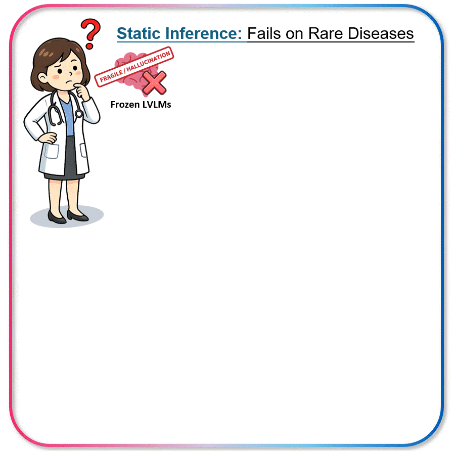

Overview
Large vision-language models struggle with clinical abnormality grounding on rare diseases and long-tailed distributions. Severe data scarcity and distribution shifts make fine-tuning impractical, while single-pass inference is highly sensitive to prompt phrasing and visual perturbations. We propose Dynamic Decisions Learning (DDL), a nova framework that optimizes instruction prompts and consolidates predictions across augmented views using structured matching. Across two brain imaging benchmarks with 281 rare pathologies, DDL yields up to 105% improvement in localization and consistently outperforms other methods.

Top: Static inference with frozen LVLMs suffers from fragility and hallucinations on rare diseases, exhibiting high sensitivity to prompt and visual variations. Bottom: DDL enables test-time dynamic evolution by synergizing the Language Space and Visual Space to navigate the decision landscape toward success, achieving up to a 105% improvement in localization reliability.